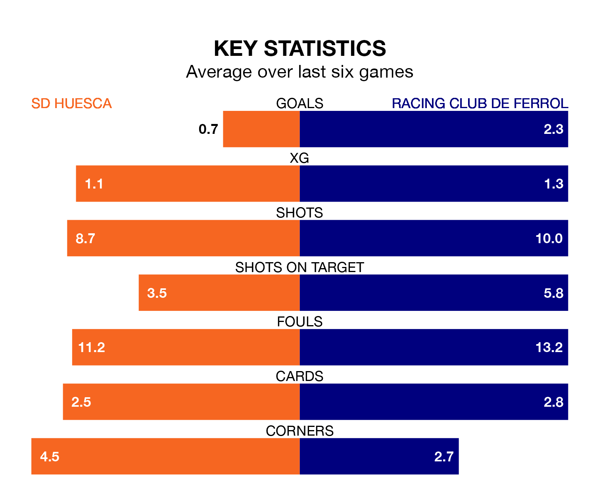

Racing Club de Ferrol face SD Huesca on Sunday seeking to protect their long unbeaten run in the Segunda División.
Racing Club de Ferrol are unbeaten in seven, with four wins and three draws, ahead of the 8pm kick-off.
They face a Huesca team who have won two and drawn two over the same number of games.
With 11 goals in 18 games so far this season, Huesca are the league's lowest scorers with 0.6 goals per game. But they are conceding fewer than average too, letting in 16 goals at a rate of 0.9 per game.
Racing, meanwhile, are above average scorers, with 1.4 goals per game, compared to a league average of 1.2. They have conceded 1.2 goals per game.
SD Huesca are 19th in the table after 18 games, of which they have won three and drawn seven, earning 16 points.
Ferrol are 14 places ahead of the hosts in fifth, with eight wins and seven draws putting them on 31 points.
Huesca's last match was on December 3, a 1-0 loss against FC Andorra.
Racing beat Albacete Balompié 5-4 last time out, also on December 3, with Sabin Merino (three), Carlos Vicente Robles and Josep Señé Escudero on the scoresheet.
